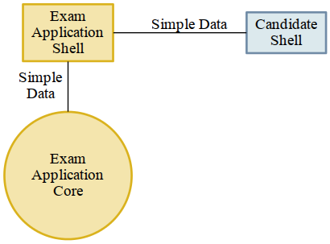
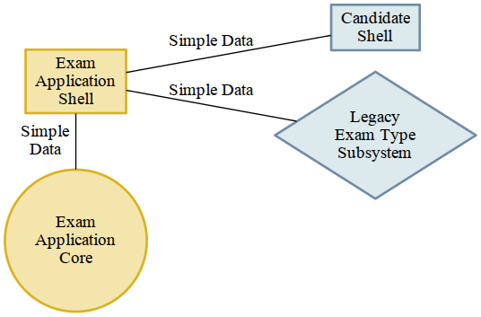

“You wanted a banana but what you got was a gorilla holding the banana and the entire jungle.”
—Joe Armstrong
Clean and Green
Pragmatic Architecture Patterns
Why?
you build systems
build
understandable
systems
build
understandable, testable
systems
build
understandable, testable, maintainable
systems
build new or transform existing systems
such that they are
understandable, testable, maintainable
Why is this so challenging in practice?
We learned that it was sufficient to
hide complexity
behind reasonable, coherent interfaces
But is convenient callability enough?
Example: Let’s build a dashboard populated with data from a Web API
def get_open_pull_requests(owner, repository): url = 'https://api.bitbucket.org/2.0/repositories/{}/{}/{}' \ .format(owner, repository, 'pullrequests') response = requests.get(url) # I/O open_requests = [] for pr in response.json()['values']: # I/O open_requests.append({ 'author': pr['author']['username'], 'title': pr['title'], }) return open_requests
The external interface is convenient
>>> get_open_pull_requests('drocco', 'some_repo') [{'title': 'Never Said I Was an Angel', 'author': 'pauline'}]
but
Inside the encapsulation is a coupled procedure
def get_open_pull_requests(owner, repository): url = 'https://api.bitbucket.org/2.0/repositories/{}/{}/{}' \ .format(owner, repository, 'pullrequests') response = requests.get(url) # I/O open_requests = [] for pr in response.json()['values']: # I/O open_requests.append({ 'author': pr['author']['username'], 'title': pr['title'], }) return open_requests
def get_open_pull_requests(owner, repository): ··· = '···················································' \ .······(·····, ··········, '············') response = requests.get(url) # I/O ············· = [] ··· ·· ·· response.json()['values']: # I/O ·············.······({ '······': ··['······']['········'], '·····': ··['·····'], }) ······ ·············
Why does it matter?
It matters because you want to build
understandable, testable, maintainable
systems
The issue is complexity
Simple is better than complex
Coupled procedures are inherently complex
Coupled procedures are hard to
understand, test, maintain
What are we trying to test?
well, …
What does our system care about?
Given a correct response from the API,
return the appropriate bits from the payload.
We need to test our logic in
get_open_pull_requests()
with a variety of responses
Higher-level question:
In general, how can we build testable systems that have nontrivial, stateful dependencies?
disk, Web, database, …
Common approach: fake it
Fake it: build API-compatible replacements for your dependencies with test fixture support
| Mock | (general) |
| WebTest | (WSGI) |
| responses, httpretty, … | (HTTP client) |
| SQLite, transaction wrappers | (DB) |
| mocks, stubs, doubles, … | (domain) |
Faking it has
problems
Test and production calls are asymmetric
Production:
open_prs = get_open_pull_requests('drocco', 'repo')
Test:
def test_get_open_pr(): fake = FakeRequests(data={…}) with mock.patch('requests.get', fake.get): open_prs = get_open_pull_requests('drocco', 'repo')
Your mock isn’t the real library
But more importantly,
Faking it doen’t put
design pressure
on the complexity of your system
The real benefit of isolated tests is that those tests put tremendous pressure on our designs
—J B Rainsberger
Testing forces us to decouple the software, since highly-coupled software is more difficult to test
—Uncle Bob Martin
Is there an alternative?
Fake it: build API-compatible replacements for your dependencies with test fixture support
Fake it: build API-compatible replacements for your dependencies with test fixture support
Clean Architecture: separate policies from mechanisms and pass simple data structures between the two
How?
This talk
How do I recognize hidden complexity?
What patterns can I apply to remedy it?
How do I build systems I can change confidently?
How do I organize larger systems?
def get_open_pull_requests(owner, repository): url = 'https://api.bitbucket.org/2.0/repositories/{}/{}/{}' \ .format(owner, repository, 'pullrequests') response = requests.get(url) # I/O open_requests = [] for pr in response.json()['values']: # I/O open_requests.append({ 'author': pr['author']['username'], 'title': pr['title'], }) return open_requests
Pragmatic Pattern 1: Promote I/O
Promote I/O:
decouple by separating
domain policies from I/O
I/O lives in thin, “procedural glue” layer
def get_open_pull_requests(owner, repository): url = 'https://api.bitbucket.org/2.0/repositories/{}/{}/{}' \ .format(owner, repository, 'pullrequests') response = requests.get(url) # I/O open_requests = [] for pr in response.json()['values']: # I/O open_requests.append({ 'author': pr['author']['username'], 'title': pr['title'], }) return open_requests
becomes
def get_open_pull_requests(owner, repository): url = build_url(owner, repository) response = requests.get(url) # I/O data = response.json() # I/O return extract_pull_requests(data)
Highly abstracted, readable manager procedure
def get_open_pull_requests(owner, repository): url = build_url(owner, repository) response = requests.get(url) # I/O data = response.json() # I/O return extract_pull_requests(data)
Instead of encapsulating I/O, we promote it
def get_open_pull_requests(owner, repository): ··· = ·········(······ ··········) response = requests.get(url) # I/O data = response.json() # I/O ······ ·····················(····)
Eliminating the I/O dependency in our logic
def build_url(owner, repository): return 'https://api.bitbucket.org/2.0/repositories/{}/{}/{}' \ .format(owner, repository, 'pullrequests') def extract_pull_requests(data): open_requests = [] for pr in data['values']: open_requests.append({ 'author': pr['author']['username'], 'title': pr['title'], }) return open_requests
Policies are clearly separated from mechanisms
def build_url(owner, repository): return 'https://api.bitbucket.org/2.0/repositories/{}/{}/{}' \ .format(owner, repository, 'pullrequests') def extract_pull_requests(data): open_requests = [] for pr in data['values']: open_requests.append({ 'author': pr['author']['username'], 'title': pr['title'], }) return open_requests
Policies are easily testable using simple data
def test_build_url(): expected = 'https://api.bitbucket.org/2.0/repositories' \ '/drocco/repo/pullrequests' assert expected == build_url('drocco', 'repo') def test_extract_with_no_pull_requests(): assert not extract_pull_requests({'values': []}) def test_extract_pull_requests(): pr_data = {'values': [{'author': {'username': 'amber'}, 'title': 'Add git mastery lessons'}]} assert 'amber' == extract_pull_requests(pr_data)['author']
By improving the testability of this code,
we have also improved its
design
Another problem
Given a root path, return a list of setseach set containing all pathsthat have identical contents
Here’s the idea:
In [1]: locate_paths_with_same_content('~/photos') Out[1]: [{'a.jpg'}, {'b.jpg', 'backup/copy_of_b.jpg'}, …]
My first attempt
def locate_paths_with_same_content(root): file_map = defaultdict(set) for path in locate_files(root): # I/O file_hash = hash_contents(path) # I/O file_map[file_hash].add(path) return file_map.values()
def locate_paths_with_same_content(root): ········ = ···········(···) for path in locate_files(root): # I/O ········· = ·············(····) # I/O ·······················(····) ······ ···············()
def locate_paths_with_same_content(root): ········ = ···········(···) for ···· ·· ············(····): # I/O file_hash = hash_contents(path) # I/O ·······················(····) ······ ···············()
Q:
Q:
How would you test this?
def locate_paths_with_same_content(root): file_map = defaultdict(set) for path in locate_files(root): # I/O file_hash = hash_contents(path) # I/O file_map[file_hash].add(path) return file_map.values()
locate_files() and hash_contents()
are embedded within the procedure’s logic
As we have seen, coupling is not an abstract, theoretical problem
locate_files() and hash_contents()
depend on the state of the disk
which means…
Your tests
depend on the state of the disk
(or on the energy you’re willing to expend simulating that state)
def locate_paths_with_same_content(root): file_map = defaultdict(set) for path in locate_files(root): # I/O file_hash = hash_contents(path) # I/O file_map[file_hash].add(path) return file_map.values()
A (very short) walk down the path of destruction
def test_simple_case(): # generate a bunch of files with known values, yielding # the root of the temporary tree as the context variable with horrible_tmp_tree_context_1() as temproot: assert magical_expected_value == locate_paths_with_same_content(temproot)
Simple is better than complex
This isn’t simple…
You’ll need context managers for
various classes of test cases
Realistically,
how many test cases
will you have the energy to write this way?
It’ll be slow
slow → inefficient
Stepping back
What do we actually care about here?
Given a root path, return a list of setseach set containing all pathsthat have identical contents
in other words,
if we subtract these assumptions
from our subroutine
def locate_paths_with_same_content(root): file_map = defaultdict(set) for path in ×××: file_hash = ××× file_map[file_hash].add(path) return file_map.values()
We care that
- two strings (paths)
- end up in the same bucket
- if they’re annotated with the same value (content hash)
For our testing purposes,
coupling is a distraction
First, apply Pattern 1: Promote I/O
def locate_paths_with_same_content(root): # …
↓
def locate_paths_with_same_content(root): paths = locate_files(root) # I/O return paths_with_same_hash(paths) def paths_with_same_hash(paths): file_map = defaultdict(set) for path in paths: file_hash = hash_contents(path) # I/O file_map[file_hash].add(path) return file_map.values()
Already an improvement, but…
How do we get rid of hash_contents()?
def paths_with_same_hash(paths): file_map = defaultdict(set) for path in paths: file_hash = hash_contents(path) # I/O file_map[file_hash].add(path) return file_map.values()
Pragmatic Pattern 2: Data and Transforms
def paths_with_same_hash(paths): file_map = defaultdict(set) for path in paths: file_hash = hash_contents(path) # I/O file_map[file_hash].add(path) return file_map.values()
- policy
- paths with the same hashshare the same bucket
- mechanism
for path in paths: file_hash = hash_contents(path) # I/O
Data and Transforms
def locate_paths_with_same_content(root): paths = locate_files(root) # I/O annotated_paths = hash_paths(paths) # I/O return paths_with_same_hash(annotated_paths) def hash_paths(paths): return [(hash_contents(path), path) for path in paths] # I/O def paths_with_same_hash(annotated_paths): file_map = defaultdict(set) for file_hash, path in annotated_paths: file_map[file_hash].add(path) return file_map.values()
def hash_paths(paths): return [(hash_contents(path), path) for path in paths] # I/O
def paths_with_same_hash(annotated_paths): file_map = defaultdict(set) for file_hash, path in annotated_paths: file_map[file_hash].add(path) return file_map.values()
Policy is easily tested with simple data
def test_simple_difference(): annotated_paths = [('0xdead', 'a.jpg'), ('0xbeef', 'b.jpg')] assert 2 == len(paths_with_same_hash(annotated_paths)) def test_simple_match(): annotated_paths = [('0000', 'b.jpg'), ('0000', 'also_b.jpg')] assert 1 == len(paths_with_same_hash(annotated_paths))
From my domain: has a candidate reached the application limit for an exam?
def get_available_sections(user, exam_type, …): # … fail_dates = [] for app in user.applications: if not app.withdrawn: # … if exam_type == app.exam_type: fail_dates.append(app.exam_date) def handle_application_limit_reached(): limit_msg = format_limit_message(exam_type) raise ApplicationLimitReachedException(limit_msg) if exam_type.limit_applications: if len(fail_dates) >= exam_type.application_limit: if exam_type.application_limit_interval == 'ever': handle_application_limit_reached() else: fail_dates.sort() limit_date = fail_dates[-exam_type.application_limit] + … if third_party and limit_date > now: handle_application_limit_reached()
Don’t try to read it,
just scan for overall structure
def get_available_sections(user, exam_type, …): # … fail_dates = [] for app in user.applications: if not app.withdrawn: # … if exam_type == app.exam_type: fail_dates.append(app.exam_date) def handle_application_limit_reached(): limit_msg = format_limit_message(exam_type) raise ApplicationLimitReachedException(limit_msg) if exam_type.limit_applications: if len(fail_dates) >= exam_type.application_limit: if exam_type.application_limit_interval == 'ever': handle_application_limit_reached() else: fail_dates.sort() limit_date = fail_dates[-exam_type.application_limit] + … if third_party and limit_date > now: handle_application_limit_reached()
Danger signs
- enormous method (this excerpt is < ¼)
- deep nesting
- this bit has nothing to do with exam sections…
def get_available_sections(user, exam_type, …):
Let’s tackle fail_dates, applying multiple Pattern 2 transforms…
Pragmatic Pattern 3: Pipeline
Handling of fail_dates is obscure, spread out
def get_available_sections(user, exam_type, …): fail_dates = [] for app in user.applications: if not app.withdrawn: if exam_type == app.exam_type: fail_dates.append(app.exam_date) if …: if len(fail_dates) >= exam_type.application_limit: if …: else: fail_dates.sort() limit_date = fail_dates[-exam_type.application_limit] + …
Input data: candidate applications
def get_available_sections(user, exam_type, …): for app in user.applications:
Four transforms
Filter out withdrawn applications:
def get_available_sections(user, exam_type, …): for app in user.applications: if not app.withdrawn: fail_dates.append(app.exam_date)
Filter out applications for other exams:
def get_available_sections(user, exam_type, …): for app in user.applications: if exam_type == app.exam_type: fail_dates.append(app.exam_date)
Extract the exam date
def get_available_sections(user, exam_type, …): fail_dates.append(app.exam_date)
– and –
Sort the result
Obscure purpose,
Cryptic implementation
Pipeline: apply a series of transforms to achieve the result you need
Filter out withdrawn applications:
def not_withdrawn(applications): return [application for application in applications if application.status_name != 'withdrawn']
Filter applications to the correct type:
def of_type(applications, exam_type): return [application for application in applications if application.exam_type == exam_type]
Connect the pipeline
prior_apps = not_withdrawn(of_type(user.applications, exam_type)) fail_dates = sorted(app.exam_date for app in prior_apps)
Pipeline allows a complex transform
to be expressed as a
series of simple transforms
prior_apps = not_withdrawn(of_type(user.applications, exam_type)) fail_dates = sorted(app.exam_date for app in prior_apps)
These transforms are easily tested
and convenient to reuse
prior_apps = not_withdrawn(of_type(user.applications, exam_type)) fail_dates = sorted(app.exam_date for app in prior_apps)
So far
build new or transform existing systems
such that they are
understandable, testable, maintainable
A common approach uses coupled procedures
with fake implementations for testing
instead…
Build systems around
functional transforms
of simple values and data structures
Objection!
No one argues the
high-level expressivity & convenient testability
of pure functions
So what’s the problem?
>>> objections = {'a'} | {'b'}
“That’s a fine academic toy,
but it can’t build real systems.”
(“real” generally being a euphemism
for “HTML-producing” ;)
“We can’t afford to
rewrite
our whole system!”
These concerns are understandable,
but not true
Claim
You don’t need a full rewrite
(and you definitely should not attempt one)
You can build real systems this way
Simple is better than complex
Build systems around
functional transforms
of simple values and data structures
How?
Apply the Clean Architecture

This is the key!
— Uncle Bob Martin
Pragmatic Architecture Patterns
Tools for applying the Clean Architecture to existing systems and new work
Pragmatic Architecture Patterns
- Promote I/O
- Data and Transforms
- Pipeline
How do you organize a system this way?
Another real example
@expose() @identity.require(identity.has_permission('agreement_delete')) def delete(self, id): agreement = EndUserAgreement.get(id) if agreement.start_date <= date.today(): return {'success': False, 'msg': 'Error: already active'} if EndUserAgreement.query.count() == 1: return {'success': False, 'msg': 'Error: only agreement'} # In order to ensure there are no gaps in agreements, … previous_agreement = self.get_previous(agreement.start_date, id) if previous_agreement: previous_agreement.end_date = agreement.end_date elif agreement.end_date: # If the deleted agreement was the first one, then we find… next_agreement = self.get_next(agreement.start_date, id) if next_agreement: next_agreement.start_date = agreement.start_date agreement.delete() return {'success': True}
Fetch the agreement to delete from the ORM
def delete(self, id): agreement = EndUserAgreement.get(id) # …
Check that it is not yet active
def delete(self, id): # … if agreement.start_date <= date.today(): return {'success': False, 'msg': 'Error: already active'} # …
(and format a message back if it is)
and that it is not the only agreement
def delete(self, id): # … if EndUserAgreement.query.count() == 1: return {'success': False, 'msg': 'Error: only agreement'} # …
def delete(self, id): # … previous_agreement = self.get_previous(agreement.start_date, id) if previous_agreement: previous_agreement.end_date = agreement.end_date elif agreement.end_date: next_agreement = self.get_next(agreement.start_date, id) if next_agreement: next_agreement.start_date = agreement.start_date
Engage
def delete(self, id): # … agreement.delete() return {'success': True}
Again…
How would you test this?
How would you test
- 5–6 ORM calls
- ≥ 3 business rules
- ≥ 5 axes of responsibility
@expose() @identity.require(identity.has_permission('agreement_delete')) def delete(self, id): agreement = EndUserAgreement.get(id) if agreement.start_date <= date.today(): return {'success': False, 'msg': 'Error: already active'} if EndUserAgreement.query.count() == 1: return {'success': False, 'msg': 'Error: only agreement'} # In order to ensure there are no gaps in agreements, … previous_agreement = self.get_previous(agreement.start_date, id) if previous_agreement: previous_agreement.end_date = agreement.end_date elif agreement.end_date: # If the deleted agreement was the first one, then we find… next_agreement = self.get_next(agreement.start_date, id) if next_agreement: next_agreement.start_date = agreement.start_date agreement.delete() return {'success': True}
Q:
How would you implement
custom rules
if a client asked?
Counterpoint
How could we possibly convert
delete()
to a pure functional form?
(for Pete’s sake, dan, even the name has state mutation in it!)
Pragmatic Pattern 4: FauxO
Functional core, imperative shell
Imperative shell:
procedural “glue” that offers
an OO interface & manages dependencies
Functional core:
implements all the decisions
Key rule
Never mix decisions and dependencies
logic goes only in the functional core
dependencies go only in the imperative shell
Pass simple data between the two
@expose() @identity.require(identity.has_permission('agreement_delete')) def delete(self, id): agreement = EndUserAgreement.get(id) if agreement.start_date <= date.today(): return {'success': False, 'msg': 'Error: already active'} if EndUserAgreement.query.count() == 1: return {'success': False, 'msg': 'Error: only agreement'} # In order to ensure there are no gaps in agreements, … previous_agreement = self.get_previous(agreement.start_date, id) if previous_agreement: previous_agreement.end_date = agreement.end_date elif agreement.end_date: # If the deleted agreement was the first one, then we find… next_agreement = self.get_next(agreement.start_date, id) if next_agreement: next_agreement.start_date = agreement.start_date agreement.delete() return {'success': True}
Step 0: EAFP
@expose() @identity.require(identity.has_permission('agreement_delete')) @error_handler(handle_REST_error) def delete(self, id): agreement = EndUserAgreement.get(id) if agreement.start_date <= date.today(): raise ValueError('Already active') if EndUserAgreement.query.count() == 1: raise ValueError('Only agreement') # In order to ensure there are no gaps in agreements, … previous_agreement = self.get_previous(agreement.start_date, id) if previous_agreement: previous_agreement.end_date = agreement.end_date elif agreement.end_date: # If the deleted agreement was the first one, then we find… next_agreement = self.get_next(agreement.start_date, id) if next_agreement: next_agreement.start_date = agreement.start_date agreement.delete()
Step 1: pull out eveything that isn’t dispatch
@expose() @identity.require(identity.has_permission('agreement_delete')) @error_handler(handle_REST_error) def delete(self, id): agreements.delete(id)
Our HTTP endpoint now does its
one job
call routing
@expose() @identity.require(identity.has_permission('agreement_delete')) @error_handler(handle_REST_error) def delete(self, id): agreements.delete(id)
(error handler left as an exercise ;)
We’ve reduced its responsibility surface four fold
It no longer has to change with
@expose() @identity.require(identity.has_permission('agreement_delete')) @error_handler(handle_REST_error) def delete(self, id): agreements.delete(id)
agreements is a manager object in the imperative shell
agreements gathers all the dependencies: stateful objects, system settings, required libraries
What does it look like?
Step 2: assert_removable()
# agreements.py (imperative shell) def delete(assignment_id): agreement = EndUserAgreement.get(id) all_agreements = EndUserAgreement.query assert_removable(agreement, all_agreements) # date adjustments temporariliy elided… agreement.delete()
Notice the divison of labor
agreements.delete()
whereas
assert_removable()
FauxO Litmus test
>>> from collections import namedtuple >>> Agreement = namedtuple('Agreement', 'start_date end_date')
# agreements_core.py (functional core) >>> def assert_removable(agreement, all_agreements): ... assert agreement and agreement in all_agreements, \ ... 'Invalid agreement' ... assert agreement.start_date > date.today(), \ ... 'Agreement already active' ... assert len(all_agreements) > 1, \ ... 'Cannot remove only agreement'
>>> from datetime import date, timedelta >>> tomorrow = date.today() + timedelta(1) >>> only_agreement = Agreement(tomorrow, None) >>> assert_removable(only_agreement, [only_agreement]) Traceback (most recent call last): ... AssertionError: Cannot remove only agreement
>>> really_planning_ahead = date(3025, 1, 1) >>> current_agreement = Agreement(date.today(), really_planning_ahead) >>> next_agreement = Agreement(really_planning_ahead, None) >>> assert_removable(next_agreement, [current_agreement, next_agreement])
>>> assert_removable(current_agreement, [current_agreement, next_agreement]) Traceback (most recent call last): ... AssertionError: Agreement already active
Next: date adjustments
def delete(assignment_id): agreement = EndUserAgreement.get(id) all_agreements = EndUserAgreement.query assert_removable(agreement, all_agreements) # In order to ensure there are no gaps in agreements, … previous_agreement = self.get_previous(agreement.start_date, id) if previous_agreement: previous_agreement.end_date = agreement.end_date elif agreement.end_date: # If the deleted agreement was the first one, then we find… next_agreement = self.get_next(agreement.start_date, id) if next_agreement: next_agreement.start_date = agreement.start_date agreement.delete()
Challenge: disentangle the mutation from the rules
Rules
- what should be updated
- how it should be updated
Pragmatic Pattern 5: Delegated value
Shell assigns a value computed by the core
# agreements.py (step 4) (imperative shell) def delete(assignment_id): agreement = EndUserAgreement.get(id) all_agreements = EndUserAgreement.query assert_removable(agreement, all_agreements) adjust_dates_for_delete(agreement) agreement.delete()
# agreements.py (step 4) (imperative shell) def adjust_dates_for_delete(agreement): previous = self.get_previous(agreement.start_date, agreement.id) next = self.get_next(agreement.start_date, id) target_agreement, updated_dates = \ get_agreement_update(previous, agreement, next) target_agreement.update(updated_dates)
# agreements_core.py (step 4) (functional core) def get_agreement_update(previous, agreement, next) if previous_agreement: return previous_agreement, {'end_date': agreement.end_date} else: return next_agreement, {'start_date': agreement.start_date}
The core implements the rules
- which agreements need to be updated
- what the new dates should be
Stepping back
We started here
@expose() @identity.require(identity.has_permission('agreement_delete')) def delete(self, id): agreement = EndUserAgreement.get(id) if agreement.start_date <= date.today(): return {'success': False, 'msg': 'Error: already active'} if EndUserAgreement.query.count() == 1: return {'success': False, 'msg': 'Error: only agreement'} # In order to ensure there are no gaps in agreements, … previous_agreement = self.get_previous(agreement.start_date, id) if previous_agreement: previous_agreement.end_date = agreement.end_date elif agreement.end_date: # If the deleted agreement was the first one, then we find… next_agreement = self.get_next(agreement.start_date, id) if next_agreement: next_agreement.start_date = agreement.start_date agreement.delete() return {'success': True}
mixed responsibilities
unclear rules
monolithic expression of intent
Practically untestable
Our functional core
def assert_removable(agreement, all_agreements): assert agreement and agreement in all_agreements, \ 'Invalid agreement' assert agreement.start_date > date.today(), \ 'Agreement already active' assert len(all_agreements) > 1, \ 'Cannot remove only agreement' def get_agreement_update(previous, agreement, next) if previous_agreement: return previous_agreement, {'end_date': agreement.end_date} else: return next_agreement, {'start_date': agreement.start_date}
def assert_removable(agreement, all_agreements): assert agreement and agreement in all_agreements, \ 'Invalid agreement' assert agreement.start_date > date.today(), \ 'Agreement already active' assert len(all_agreements) > 1, \ 'Cannot remove only agreement' def get_agreement_update(previous, agreement, next) if previous_agreement: return previous_agreement, {'end_date': agreement.end_date} else: return next_agreement, {'start_date': agreement.start_date}
Easily testable using simple data structures
- no special setup
- test calls are symmetric with production calls
Clear assignment of responsibilities
- Core → logic
- Shell → dependencies
- Endpoint → dispatch
FauxO interface provides a
familiar façade
to the rest of the system
Our HTTP endpoint
@expose() @identity.require(identity.has_permission('agreement_delete')) @error_handler(handle_REST_error) def delete(self, id): agreements.delete(id)
Our imperative shell
def delete(assignment_id): agreement = EndUserAgreement.get(id) all_agreements = EndUserAgreement.query assert_removable(agreement, all_agreements) adjust_dates_for_delete(agreement) agreement.delete()
Imperative shell (cont.)
def adjust_dates_for_delete(agreement): previous = self.get_previous(agreement.start_date, agreement.id) next = self.get_next(agreement.start_date, id) target_agreement, updated_dates = \ get_agreement_update(previous, agreement, next) target_agreement.update(updated_dates)
Last examples from a
real system
that really serves
real HTML!
Thoughts for systems
Connect shells to each other
Or to existing legacy subsystems
Pluggable components
T.S. Eliot
Immature poets imitate;
Immature poets imitate;
mature poets steal
—T.S. Eliot
Special thanks to
Brandon Rhodes the Great
from whom I’ve stolen many ideas over the years
Thank you!
♥
@drocco007